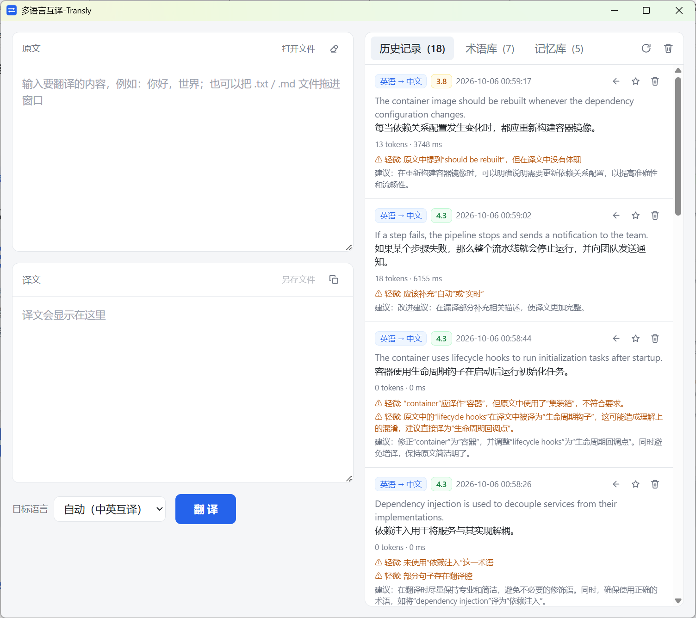

面向涉密与敏感行业、离线与内网工作环境的本地翻译工具：模型在你的设备上运行，无需联网、无需上传，文本永不离开本地，数据完全由你掌控。

时长 18 秒 · 含背景音乐 · 各项能力详见下方版块介绍
翻译在本机完成，文本不出设备、不上云，数据归你所有、由你掌控，无第三方留存。
推理全程离线，内网隔离、断网或野外环境均可运行，不依赖任何外部 API 与账号。
仅需 CPU 即可运行，适合内网、边缘与对数据主权有严格要求的部署环境。
政务、军工、金融、司法、海关等行业的涉密与敏感文本，可在不接触外网的前提下完成翻译。
从输入到沉淀，六个步骤全部在你的设备上完成 —— 术语、记忆、历史与评分数据同样不出本地。
键入或粘贴文本，也可打开 / 拖入 .txt、.md 文件；选择目标语言，或交给系统自动判断方向（38 种语言、约 1056 个互译方向）。
从本地术语库召回命中的行业术语：同义词一并识别，禁用译法随提示词下发，保证全文译法统一。
原文按句段与本地翻译记忆比对：相似度 ≥95% 直接复用历史译文，85%~95% 作为参考，其余交给模型。
HY-MT1.5-1.8B 在你的 CPU 上生成译文；高相似句段自动回填，确保复用结果不被改写。记忆全命中时 0 次模型调用，秒级出结果。
准确性、术语一致性、流畅性、风格四个维度打分（1~5 分），输出错误清单与改进建议，平均分保留一位小数。
结果写入本地历史：← 一键载入再编辑、★ 收藏进记忆库供下次复用；译文还可以一键「润色」去翻译腔。
术语、记忆、评分、润色四个抓手，把一次性翻译变成可持续积累的本地语言资产。
维护「源术语 → 推荐译法」，同义词自动识别、禁用译法随提示词下发，杜绝“容器 / 集装箱”式错译。
相似句段秒级复用历史译文；全部命中时无需调用模型，直接出结果，重复内容几乎零等待。
每次翻译与润色都做四维打分，列出错误与改进建议；历史里平均分一眼可见，质量不再凭感觉。
结合术语约束与翻译记忆重写译文，事实与术语不跑偏；初译与润色稿都留档，随时对比回看。
历史一键 ★ 收藏成翻译记忆，术语、记忆、历史与评分全部沉淀在本机数据库，不上传、不流失。
桌面应用、命令行、HTTP API 共用同一个本地服务；服务可单独部署在内网另一台设备，客户端地址可配置。
同一个本地模型，三种接入方式：命令行、HTTP API、桌面应用，覆盖脚本批处理、程序集成与人工使用。
三种模式：管道模式从标准输入读文本、译文写标准输出；it 进入连续会话逐句翻译；serve 启动 HTTP 服务。默认中英互译自动判断方向，也可用 --target 指定任意目标语言。
it 连续会话：逐行输入回车即译，/exit 退出--target <语言代码> 指定目标语言# 管道模式：stdin 输入，stdout 输出译文
echo "你好！" | transly-cli --target ja
こんにちは！
# 文件批量翻译并重定向
transly-cli --target en < notes.txt > out.txt
# it 连续会话模式
transly-cli it
> 你好，世界
Hello, world.
[中文 -> 英语 | 1.02s]
> /exit启动服务后调用 REST 接口，JSON 请求 / 响应，便于集成进你自己的程序或业务系统。
POST /api/v1/translate 翻译：自动带术语约束与记忆预翻译，返回四维评分POST /api/v1/polish 润色：对初译去翻译腔，结果同样入库GET / DELETE /api/v1/history 历史记录（含评分、错误与建议）terms / memory 术语库与翻译记忆的增删改查、召回curl -X POST http://127.0.0.1:8080/api/v1/translate \
-H "Content-Type: application/json" \
-d '{"text":"你好，世界","target":"ja"}'
// 响应
{"code":0,"data":{"translatedText":"こんにちは、世界",
"tokenCount":7,"inferenceTimeMs":668}}双击打开即用，无需额外安装运行时。左侧原文 / 译文上下排列，右侧「历史记录 / 术语库 / 记忆库」三个 Tab，翻译、润色、评分、沉淀在一个窗口完成。
33 种主流语言 + 5 种民族语言 / 方言变体，共 38 种语言，覆盖约 1056 个互译方向。
除了命令行、API、桌面应用三种接入方式，项目还附带一个预置技能：把本地翻译 API 封装成语义化调用，让 AI 助手也能直接翻译，无需重新接线。
装进智能体即可翻译，一句指令完成中英或多语言互译。
调用的是同一个本地 API，离线运行、数据不出本地。
支持 --target 指定任意目标语言，缺省中英互译。
服务未启动、参数非法或翻译失败时给出明确提示。
lang-translator-skill/
├── SKILL.md # 能力说明与触发条件
└── scripts/
└── translate.py # 调用本地翻译 API
# 使用
python scripts/translate.py --text "你好，世界"
python scripts/translate.py --text "你好，世界" --target ja